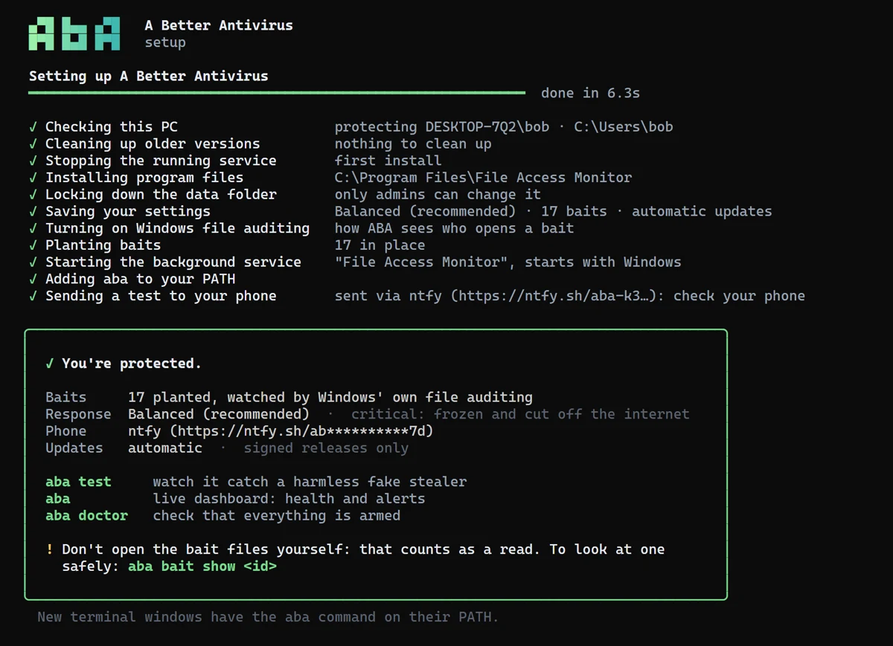

Free & open source · Windows, macOS, Linux
Catch infostealers in the act.
Infostealers are malware that grab your saved passwords, crypto wallets and app logins in seconds. ABA plants fake ones right where they look. Your own apps have no reason to touch them. When something suspicious opens one, ABA freezes it, typically about a tenth of a second later.
ABA runs on Windows, macOS and Linux. See the downloads
Despite the name, keep Windows Defender on. ABA isn't an antivirus. It's the tripwire for what gets past one. Why both?
You're the stealer.
This is Sam's PC. Grab what looks valuable and hit Upload. Some of these files are baits.
What a stealer sees on a PC running ABA. Files marked bait are ABA's. Turn on JavaScript to try robbing it.
C:\Users\sam\Desktop
- passwords.txtbait
- invoice_march.pdfreal
C:\Users\sam\Documents
- wallet recovery phrase.txtbait
- Passwords.kdbxbait
- tax return 2025.pdfreal
…\Google\Chrome\User Data Sam uses Chrome
- DefaultLogin Data, Cookiesreal
- Profile 23Login Data, Cookiesbait
- Local Statereal
C:\Users\sam\AppData apps Sam doesn't have
- discord\Local Storage\leveldbbait
- Exodus\exodus.walletbait
- Telegram Desktop\tdatabait
- Opera Software\Opera Stablebait
C:\Users\sam
- .aws\credentialsbait
A simulation modelled on the real ABA. Freeze times are drawn from the 72–151 ms ABA measures in its tests. The real thing in action: a real stealer, frozen in 158 ms.
It's not an antivirus.
It's a better one.*
The name is a joke. Keep Windows Defender on.
Antivirus tries to stop malware before it runs. ABA is the tripwire for when something gets past it, and that's the part antivirus is bad at. They do different jobs. Use both.
Not a simulation
A real infostealer. Defender off.
Frozen in 158 ms.
Read what happens in the video
- Text on a black screen: “This is a real Discord token stealer. Windows Defender is off.”
- ABA is installed on a Windows 11 test machine with one command. Setup ends with “armed” and 18 bait files planted: fake passwords, wallets and tokens.
- The desktop. A file called “passwords” is highlighted: it's a bait.
- “Now the stealer.” A file called zombiesurvival.jar, which looks like a game, is double-clicked. A timer starts.
- About two seconds later a popup appears: “ABA: javaw.exe opened a bait”. It says the program read the Discord token store and, under “What ABA did”: “Froze it”. A red stamp reads “Frozen. 158 ms after it touched the bait. Before it could send anything.”
- “It went for the Discord token. A fake one. It's bait.”
- The popup asks what should happen. “Yes = Kill it” is clicked.
- ABA's full report in a terminal: what the program read, what launched it, its hash. It ends with “frozen, then killed”. A check for the stealer's process finds nothing.
- Closing text: “A Better Antivirus. Free and open source.”
How long is 158 ms?
That's all the time the stealer in the video had before ABA froze it. Try to beat 158 ms: hit the pad the instant it turns red.
- You
- –
- ABA, in the video
- 158 ms
- ABA, in its tests
- 72–151 ms
Why it works
Infostealers grab first and upload last. ABA stops them in between.
Infostealers (Lumma, RedLine, Vidar, StealC…) are the most common malware on personal PCs. They sweep your browsers, crypto wallets, Discord and Telegram sessions and documents, zip everything up and send it out in seconds.
Most collect first and upload at the end. Collecting means opening files in predictable places. ABA puts tripwires in those exact places.
A typical infostealer's run
- Chrome profilecollected
- Documentscollected
- Discord tokena bait: frozen
- Walletsnever
- Telegramnever
- Zip it upnever
- Uploadnever
Four kinds of bait
-
passwords.txt · recovery phrase · 2FA codes · .kdbx
Fake files where grabbers look
A password list on your Desktop, in Documents and in your home folder, plus a wallet recovery phrase, 2FA backup codes and a KeePass database. Every install picks different names, so stealers can't skip them.
-
Opera · MetaMask · Exodus · Telegram · Discord · AWS
Fake data for apps you don't have
Browser profiles (Opera, Vivaldi, Yandex, Brave) with saved logins and cookies, crypto wallets (MetaMask, Exodus, Electrum, Atomic), Telegram sessions, Discord tokens, FileZilla servers and AWS keys. Since you don't have those apps, nothing legitimate ever reads them. ABA checks what's installed first; add one later and it retires that decoy and tells you.
-
…\Chrome\User Data\Profile 23
A fake profile in the browsers you do use
A fake
Profile 23(or similar) sitting next to your real profiles in Chrome, Edge and Brave. Stealers grab every profile folder; your browser only opens the ones it knows about. Checking whether the browser is installed won't help a stealer dodge it. -
optional · canarytokens.org
Canary tokens
The fake AWS keys and a link inside
passwords.txtcan be real canarytokens.org tokens. If a thief ever uses them later, you get an email, even if your PC wasn't online to alert you.
ABA catches infostealers by what they do, not by recognising the file. So it works on brand-new ones no antivirus has a signature for yet.
How it works
Inside that tenth of a second.
Instant freeze is on by default on Windows. Here it is in slow motion; in real life it typically takes about 0.1 s.
- ABA holds a lock on every bait. An exclusive opportunistic lock, so Windows tells ABA the moment a file is opened.
- A program opens one. Windows pauses it inside the open and tells ABA at once.
- ABA notes which threads paused, then releases the lock.
- The one that wakes at that exact instant is the opener: identified precisely, never guessed.
- If it's suspicious, it's frozen. Typically about 0.1 s after the open (72–151 ms in ABA's tests).
To stay safe, instant freeze only acts on ordinary non-admin programs running as you: never system processes or ABA itself. If more than one program wakes at once, it won't guess. Programs that ask Windows not to pause them are caught by the open handle they leave behind. Anything else falls back to Windows' own file auditing (event 4663), which takes a few ms to about 1 s. No kernel driver, no background scanning, no idle CPU use.
What happens next
-
Judge how bad it is
Automatically, based on what opened the bait and how. What counts as critical
-
Freeze the whole thing
A stealer is rarely one process. ABA freezes the reader, anything it launched, the loader or script host that started it and any other running copies. They're held where only ABA's service can thaw them.
-
Check before blaming
ABA checks the program's code signature. A signed, legitimate app is unfrozen and simply noted.
-
Collect evidence while it's frozen
Command line, parent processes, file hash and network connections.
-
Respond
Cut its internet, kill it or isolate the PC, depending on your preset.
aba releaseundoes everything. -
Tell you
A desktop popup, plus your phone if you set it up (ntfy, Discord webhook, Pushover or email). Click Kill it, or It's mine to undo it.
What counts as critical
- criticalAnything going through several apps' data within 2 minutes (a sweep), alone or split over several programs
- criticalUnsigned programs in Temp, AppData, Downloads, Desktop…
- criticalScript hosts and tools stealers abuse (PowerShell, cmd, mshta, rundll32, certutil, MSBuild…), plus Java, Python or Node running a script or
.jarfrom Desktop, Downloads or Temp - criticalTricks to read unseen, injected code in a Windows program, or unsigned DLLs sideloaded by a signed app
- warnSigned apps in a user folder, other scripting runtimes, or other Windows programs in your session
- infoSigned, installed software in Program Files, Windows services
Behaviour beats identity. Stealers often hide inside a legitimate program, so who opened a bait can lie. What it opened can't: a process that reads several different apps' baits is stopped as a stealer whatever it claims to be.
You choose how hard it hits
| Preset | Critical | Warn |
|---|---|---|
| Alert only | notify | notify |
| Balanced default | freeze + block its internet | notify |
| Strict | freeze + block + isolate the PC | freeze |
Isolation uses the Windows Filtering Platform, survives reboots so malware can't wait it out, and still lets ABA's phone alert through.
Honest limitations
Where it stops.
ABA is a tripwire, not a shield. Know where it stops before you rely on it. Full list in the README.
-
It only catches infostealers that touch a bait
A stealer that only grabs your real browser data and never touches a bait won't trip ABA. Because ABA is open source, a stealer can be written to know about it. What it can't do cheaply is tell baits from real files. Still, one that reads each browser's own list of profiles and takes only those, ignoring everything else on the PC, stays under the wire.
-
A fast stealer may get something out first
With instant freeze, a stealer is frozen about 0.1 s after it opens a bait (it gets the fake contents, not your real data). Without it, ABA takes a few ms to about 1 s. A stealer that uploads each file the moment it reads it may send something first; freezing stops everything it hasn't sent yet.
-
It can't beat malware with admin rights
Malware running as administrator can stop the service, clear the audit policy or remove filters. ABA alerts if auditing is switched off, but it can't defend against an attacker who already owns the machine.
-
Instant freeze is deliberately cautious
It skips programs running as administrator and anything it can't pinpoint with certainty. Those are still caught by the event-log path, just a little later.
-
Injected code is judged by its results
Watching one process inject code into another needs a kernel driver or Microsoft's protected-antivirus signing, and ABA has neither. Instead, it catches injected stealers by what they read and by unbacked code left in a Windows program's memory. That check skips runtimes that legitimately generate code (.NET, Java, browsers), and tricks like module stomping or process ghosting slip past it (the sweep rule still catches them). A stealer injected into a trusted app that reads only the one bait you trusted it with would get through.
explorer.exeand a few other desktop processes are never frozen; their internet is cut instead. -
A reader that's already gone can't lead to its parent
If a reader exits before its event arrives, and instant freeze couldn't single it out, ABA still reports it and cuts its file's internet, but can't tell what launched it.
-
Killing the service mid-incident ends frozen processes
Otherwise, a process nobody is left to release would stay frozen forever. This only happens if the service crashes or is killed; normal stops, updates and reinstalls release holds cleanly.
-
Some of your own software reads files
Backup, sync and search tools can trip a bait. One click on It's mine handles signed apps. A backup tool that copies all of AppData looks like a sweep until you allow it.
-
~/.aws/credentialsis quieterEvery AWS SDK reads it on startup, so a signed program touching it is only logged. Unsigned programs, script hosts and runtimes still trip it.
-
Popups need you to be signed in
Detections are always logged, phone alerts always go out, and responses happen either way.
-
Low profile, not hidden
The service and program folder are called “File Access Monitor” so they don't advertise themselves to malware looking for honeypots. Windows' Installed apps list and Start menu still show it as A Better Antivirus.
Download
Set the trap.
Free. No account. No telemetry. Setup takes about a minute.
-
Download ABA-Setup.exeOne installer for x64 and ARM64 · from GitHub Releases
Windows 10 & 11
Available Your systemLatest release from GitHub. Shows up as “A Better Antivirus” in Windows' Installed apps and Start menu.
-
Download ABA-macOS.pkgApple silicon and Intel · signed and notarized by Apple
macOS 14+
Early Your systemOpens with no warning. After installing, turn on Full Disk Access for “File Access Monitor” in System Settings → Privacy & Security.
-
Linux
Early Your systemcurl -fsSL https://raw.githubusercontent.com/vulnix0x4/a-better-antivirus/main/install.sh | shRequires systemd. Verifies the release signature before running anything (read the script). Also available as
.deb,.rpmor a tarball on GitHub Releases.
Windows setup: what to expect
-
Open
ABA-Setup.exeDouble-click it in your Downloads folder. If your browser says the file isn't commonly downloaded, choose to keep it.
-
Windows will warn you. That's expected, for now.
ABA's Windows installer isn't code-signed yet (an application for free open-source signing is pending). Until then, Windows doesn't recognise the file and shows its blue SmartScreen warning.
- Click More info.
- Check that the app is
ABA-Setup.exe, then click Run anyway.
Windows protected your PC
Microsoft Defender SmartScreen prevented an unrecognized app from starting. Running this app might put your PC at risk.
Run anywayDon't run
A drawing, not a screenshot: what you'll see after More info. Smart App Control. On Windows 11 PCs with Smart App Control turned on, Windows may block an unsigned installer outright with no Run anyway button. If that happens, hold off until signing arrives. Don't turn off Smart App Control for ABA.
Want to verify first? Check the SHA-256
Every release publishes a SHA-256 fingerprint for each file. If yours matches, it's the exact same file, byte for byte.
- Open SHA256SUMS.txt from the latest release and find the line ending in
ABA-Setup.exe. - In PowerShell (press Start, type PowerShell, hit Enter), run this. It only reads the file:
(Get-FileHash "$HOME\Downloads\ABA-Setup.exe").Hash - Both hashes must match (uppercase or lowercase doesn't matter). If they don't, don't run the file.
The list itself is signed with ABA's release key (
SHA256SUMS.txt.sig). How releases are protected. -
Say yes to the admin prompt
ABA needs administrator rights to install its background service and plant the baits.
-
Answer two questions
Setup asks just two things: phone alerts and automatic updates. It plants the recommended baits with Balanced protection. You can change any bait or response later with
aba configure, or customize upfront using the PowerShell install below. -
Watch it catch a harmless fake stealer
At the end, setup offers a safe test: a harmless fake stealer opens a bait so you can watch ABA freeze it. Here's what it prints:
PS C:\Users\you> aba test A harmless copy of ABA in your Temp folder is about to read passwords.txt on the Desktop, exactly the way a stealer would. Nothing leaves your PC and your network isn't touched. ✓ Caught critical: unsigned program running from a user-writable folder: typical of stealers ✓ Frozen 72 ms after it opened the bait, before it could read a byte ✓ Alerted popup on your desktop, and your phone (ntfy) ✓ Cleaned up the fake stealer was killed and deleted
Try

What the end of terminal setup looks like.

One rule afterwards: don't open your bait files. Opening one counts as a read, and ABA will react. To peek inside one safely, run aba bait show <id>. To remove everything, run aba uninstall.
Prefer the terminal? Install from PowerShell
irm https://raw.githubusercontent.com/vulnix0x4/a-better-antivirus/main/install.ps1 | iexDownloads the latest release for your PC, verifies its SHA-256 against SHA256SUMS.txt, and starts the guided setup (where you can also pick every bait and response yourself). Read the script first if you like.
Only paste irm … | iex commands from sources you trust. It's also how many infostealers get installed (“paste this to fix your PC”). This script is short, open source, and refuses to run a download whose checksum doesn't match.
Everything it touches
What ABA changes on a Windows PC.
No hidden files, no surprises. aba uninstall undoes all of it.
| What | Where | On uninstall |
|---|---|---|
| Program | C:\Program Files\File Access Monitor | removed |
| Service | FileAccessMonitor, runs as LocalSystem, starts with Windows | removed |
| Data, alerts, logs | C:\ProgramData\FileAccessMonitor, admins only | alerts kept unless --purge |
| Audit policy | “Audit File System: Success” | restored to what it was |
| Baits | your folders and fake app folders | removed (files you made are kept) |
| Firewall filters | WFP provider “A Better Antivirus”, only while responding | removed |
| PATH | adds the program folder | removed |
What goes over the network
- Phone alerts, if you set them up.
- Canary token creation, if you opt in (your email goes to canarytokens.org).
- With automatic updates on, one request a day to
api.github.com.
Nothing else. No telemetry.
This site keeps the same promise: no analytics, no trackers, nothing loaded from anywhere else. Even the font and the video are served from here.
Read every line
MIT licensed. Source on GitHub.
Signed updates only
Updates only install if
SHA256SUMS.txtcarries a valid ed25519 signature from ABA's release key and the download matches it. Never downgrades, and rolls back automatically if the new version fails to start.Tested end to end
Every push runs a full install, fake stealers, freeze, kill, isolate and uninstall on real Windows, macOS and Linux machines.
Found a way around it?
ABA runs with system rights, so security bugs matter. Report them privately: security policy.